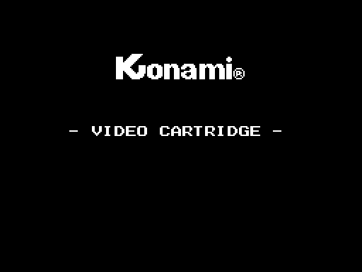
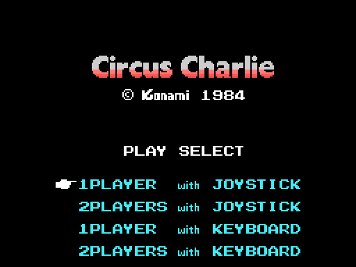

16 KB en la página 1 (0x4000-0x7FFF), cabecera AB con INIT en 0x407B y sin BASIC. Pantalla en SCREEN 2.
Toda la RAM del juego es 1 KB: 0xE000-0xE3FF, puesta a cero por INIT con el ldir sobre sí mismo. La pila, en 0xE500.
| zona | qué hay |
|---|---|
0xE000 | la escena en curso |
0xE003 | el contador de cuadros |
0xE005 | el cerrojo de reentrada de la interrupción |
0xE052 | el tipo de atracción, de 0 a 4 |
0xE0B0 | el búfer de los 32 sprites, que cada cuadro se vuelca entero a 0x3B00 |
0xE130 | el jugador: posición, posición y pose |
0xE150 / 0xE170 / 0xE1B0 | los móviles, los recogibles y el suelto |
0xE280 | el búfer del segundo descompresor |
Usa siete rutinas: RDVDP, SETRD, SETWRT, WRTVDP, WRTPSG, RDPSG y SNSMAT. Y lee dos bytes de su tabla, (0x0006) y (0x0007), que son los puertos del VDP.
No son la misma: la de la casa (logotipo de KONAMI y "- VIDEO CARTRIDGE -") y la del título. Comparten decorado byte a byte; solo cambia la tabla de nombres. Las dos están dibujadas desde la ROM y cotejadas a cero bytes.

